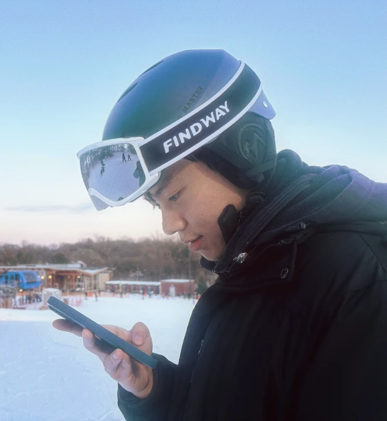
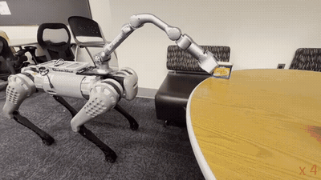
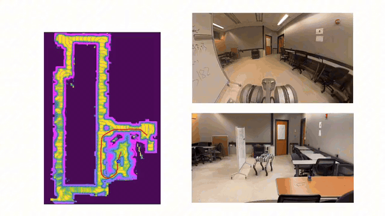
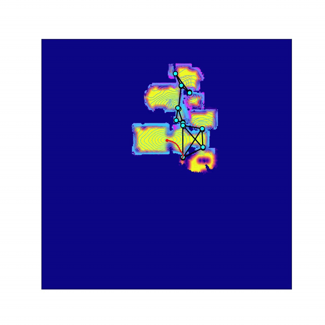
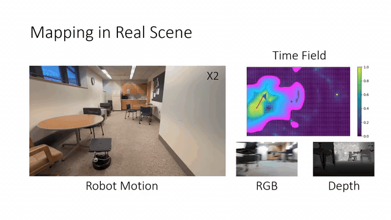
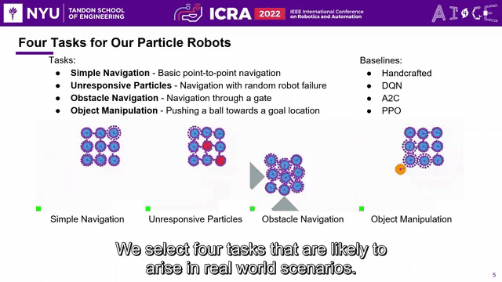
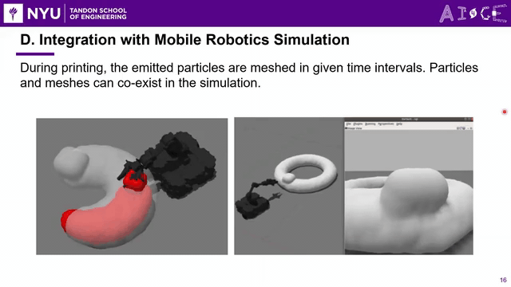
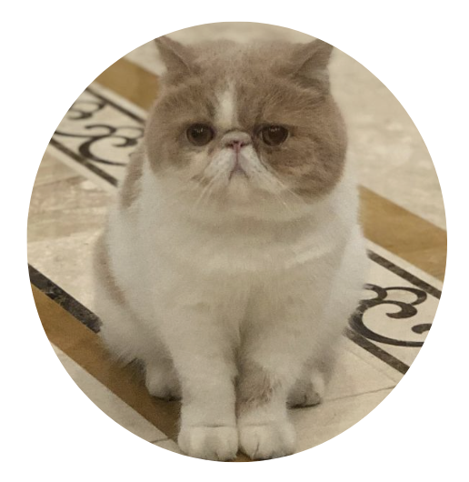
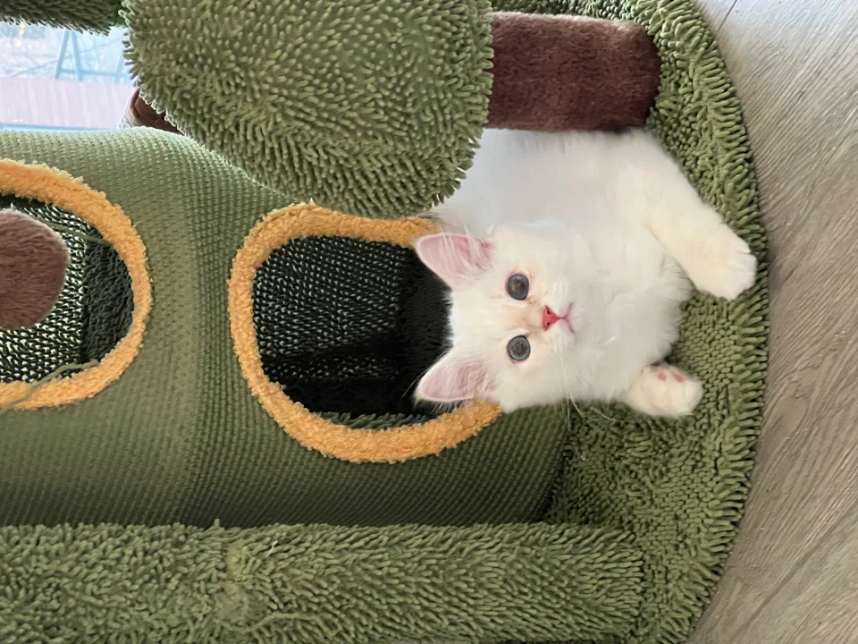
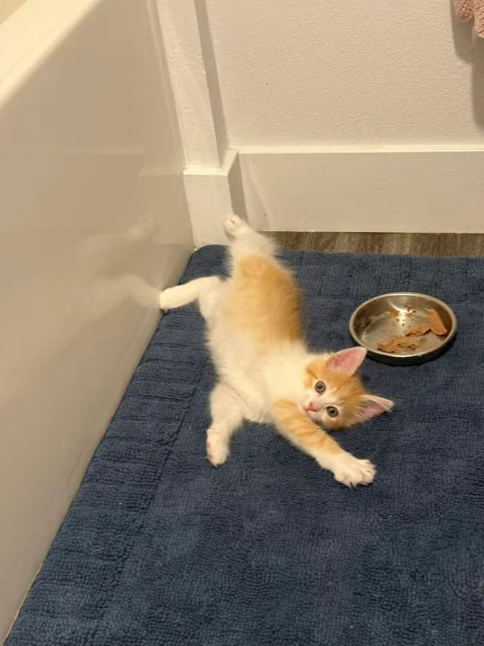

Yuchen Liu
SPATIAL REPRESENTATIONS · ROBOT LEARNING
Fourth-year PhD student at Purdue University
Seeking Summer 2027 research internships
About Me
I am a fourth-year PhD student at Purdue University, advised by Prof. Ahmed H. Qureshi at the CoRAL Lab. My research focuses on spatial representations for robot learning and motion planning. I develop neural fields and physics-informed learning methods that help robots represent geometry and connectivity for efficient planning in unknown and large-scale environments.
I am currently a Research Intern at Dexmate AI (Summer–Fall 2026), working on motion planning and AI agents.
Previously, I visited the TEA Lab at Tsinghua University (Summer 2025), working with Prof. Huazhe Xu on household mobile manipulation. Our work uses object-centric alignment to connect semantic navigation with manipulation and transfer manipulation skills across environments; the resulting paper has been submitted to IEEE RA-L.
Before joining Purdue, I earned my B.S. and M.S. in Computer Science at New York University (2019–2023), where I worked with Prof. Chen Feng at the AI4CE Lab on robotics simulation.
I am seeking Summer 2027 research internships in spatial representation, robot learning, and motion planning. Get in touch.
Outside research, I enjoy detective novels, strategy games, and spending time with my cats.
Latest News
- Summer–Fall 2026 I am a Research Intern at Dexmate AI.
- 2026 Our T-RO paper "Physics-informed Neural Mapping and Motion Planning in Unknown Environments" received an Honorable Mention, King-Sun Fu Best Paper Award.
- 2026 Our paper "Weakly-supervised Learning for Physics-informed Neural Motion Planning via Sparse Roadmap" was accepted at ICRA 2026.
- June, 2025 Our paper "Online Hierarchical Policy Learning using Physics Priors for Robot Navigation in Unknown Environments" accepted at IROS 2025!
- June, 2025 Our paper "Physics-informed Neural Motion Planning via Domain Decomposition in Large Environments" accepted at IROS 2025!
- Summer 2025 I visited the TEA Lab at Tsinghua University as a visiting student.
- January, 2025 Our paper "Physics-informed Neural Mapping and Motion Planning in Unknown Environments" accepted at T-RO!
Publications

Weakly-supervised Learning for Physics-informed Neural Motion Planning via Sparse Roadmap
ICRA 2026
Learning a continuous planning representation from sparse roadmap supervision and physics-informed constraints.



Physics-informed Neural Mapping and Motion Planning in Unknown Environments
T-RO 2025
Honorable Mention, King-Sun Fu Best Paper Award (2026)

A deep reinforcement learning environment for particle robot navigation and object manipulation
ICRA 2022
Outstanding Coordination Paper Award — Finalist

My Research Assistants

Qiuqiu
Naitang

Congo
